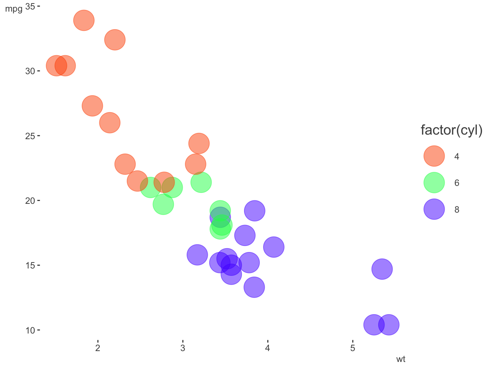
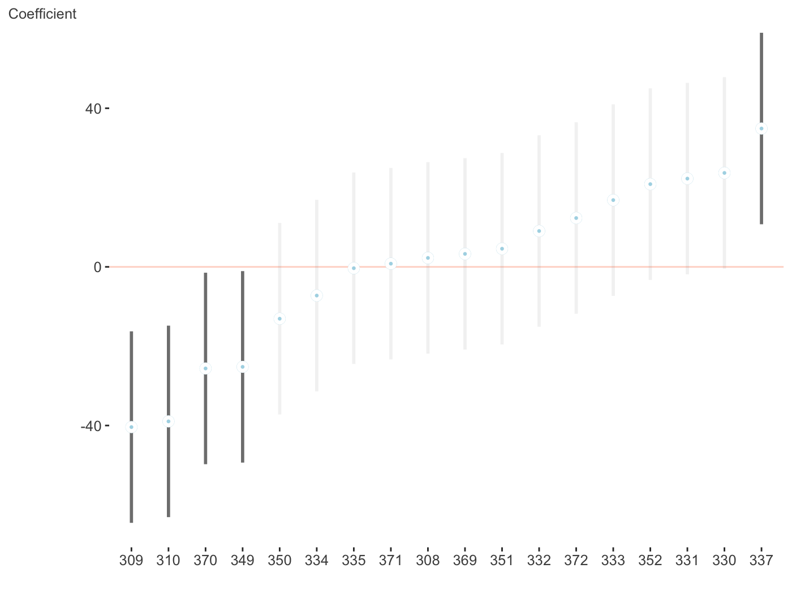
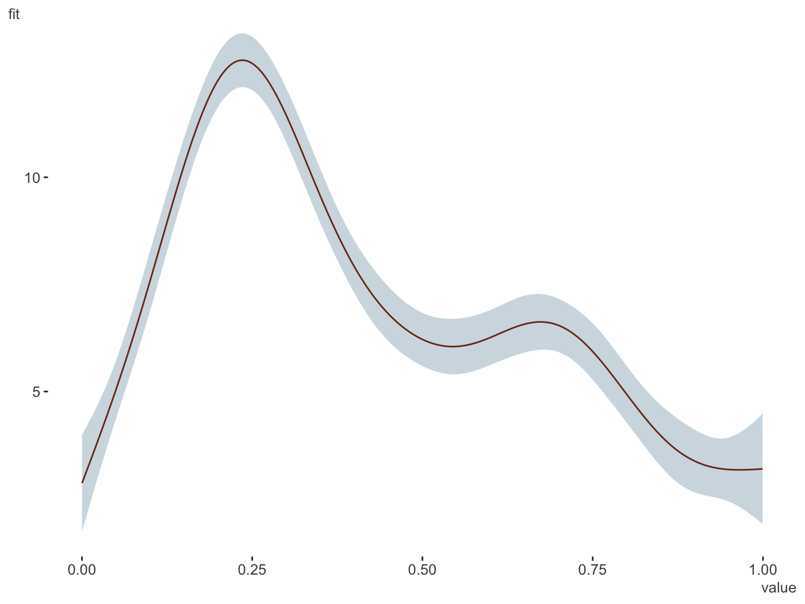
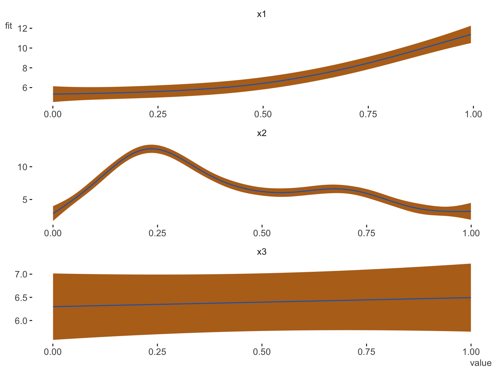
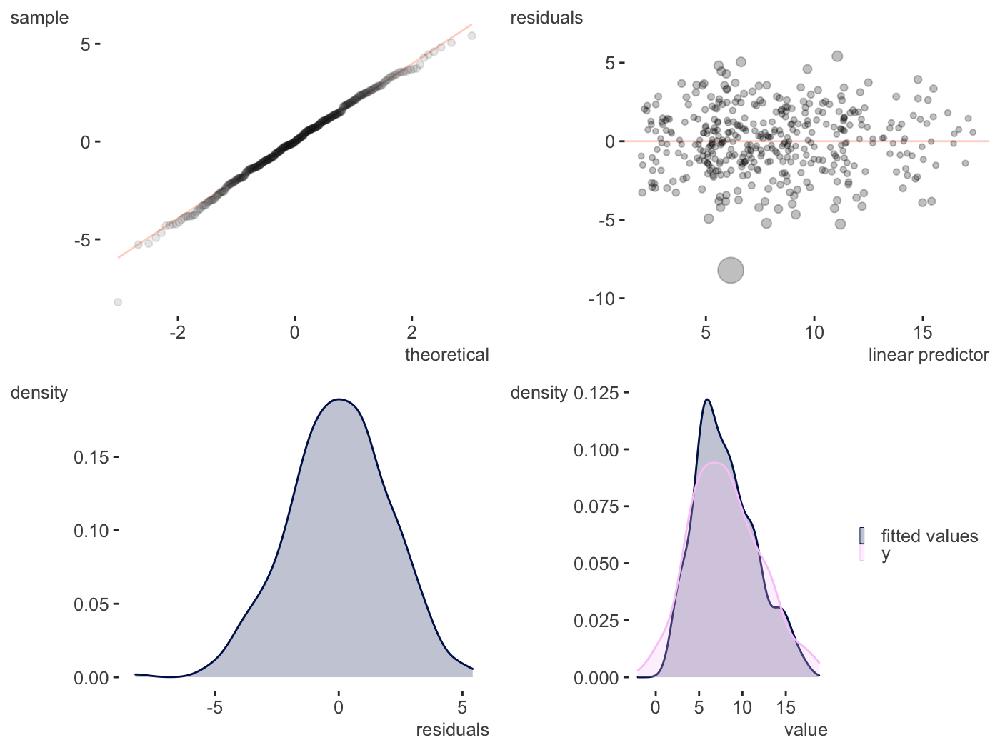

Palettes & Themes
One can get started by creating a palette. This uses the colortools package to provide evenly spaced colors.
$papayawhip
[1] "papayawhip"
$complementary
[1] "#FFEFD5" "#D5E5FF"
$analogous
[1] "#FFEFD5" "#FAFFD5" "#FFDAD5"
$split_complentary
[1] "#FFEFD5" "#D5FAFF" "#DAD5FF"
$triadic
[1] "#FFEFD5" "#D5FFEF" "#EFD5FF"
$square
[1] "#FFEFD5" "#D5FFDA" "#D5E5FF" "#FFD5FA"
$tetradic
[1] "#FFEFD5" "#E5FFD5" "#D5E5FF" "#EFD5FF"Here is a palette based on the blue in the R logo.
palettes$Rblue
$Rblue
[1] "#1f65b7"
$complementary
[1] "#1f65b7" "#b7701f"
$monochromatic
[1] "#1f65b7" "#366caa" "#4a719e" "#5a7491"
$analogous
[1] "#1f65b7" "#241fb7" "#1fb2b7"
$split_complementary
[1] "#1f65b7" "#b2b71f" "#b7241f"
$triadic
[1] "#1f65b7" "#66b71f" "#b71f66"
$tetradic
[1] "#1f65b7" "#b7701f" "#66b71f" "#701fb7"The palette creator can create some decent categorical distinctions without too much fuss. The following also demonstrates one of the themes, which has no grid/gray, and de-bolds the black font while leaving text clear; even the fainter version will pass web standards for contrast against a white background. As shown, you can still fiddle with the theme beyond that.
pal = create_palette('#ff5500',
name = 'orange_you_glad_you_have_this_color')
library(ggplot2)
ggplot(mtcars, aes(x=wt, y=mpg)) +
geom_point(aes(color=factor(cyl)), size=10, alpha=.5) +
scale_color_manual(values = pal$triadic) +
theme_trueMinimal()
library(dplyr)
mtcars %>%
mutate(cyl = factor(cyl)) %>%
tidyext::num_by(wt, cyl) %>%
ggplot(aes(x=cyl, y=Mean)) +
geom_col(aes(fill=cyl), width=.5, alpha=.85) +
scale_fill_manual(values = palettes$Rblue$triadic) +
theme_trueMinimal() +
theme(legend.key.size = unit(.015, 'npc'),
axis.title.y = element_text(size=20, hjust=-.05))
Another way to create palettes is with a function that works with colorgorical. It connects to that website to create colors based on things like whether they perceptually go together aesthetically, whether they are more or less perceptually distinct, or even if their name is unique.
## colorgorical(n=6, pairPreference = 1, startPalette = list(c(10, -60, 45)), output = 'hex')
[1] "#002B00" "#95C857" "#334D37" "#4EF185" "#378811" "#7FE7D3"## colorgorical(n=10, perceptualDifference = .5, startPalette = list(c(10, -60, 45)), output = 'hex')
[1] "#002B00" "#D57381" "#77CE3F" "#DB0EAC" "#2FF52B" "#6C208E" "#B1BF81" "#4115F9" "#518512" "#B662CA"
To get a starting palette from an R or hexadecimal value, try col2lab.
However, if you want palettes that are colorblind-safe, print-safe etc., especially for continuous scales, you should use packages like viridis and scico.
Plotting model results
I have some visualizations for plotting uncertainty intervals for fixed and random effects of mixed models. These require the scico package, as well as lme4 and brms which are used to do the mixed models in the first place.
lm and glm
I don’t really use them aside for demonstration, but in this case the lm and glm objects served as a baseline.
Change the palette, order and more.
fit_lm = lm(mpg ~ ., mtcars)
plot_coefficients(fit_lm,
palette='oslo',
order = 'decreasing',
sd_multi = 1,
keep_intercept = TRUE,
ref_line = c(-1:1))
Data only
You may want to do your own visualization, or go beyond the default settings. Rather than providing a couple dozen arguments for you to tweak, just so you can still feel like you can’t get it just quite right. Here’s the data, do with it what you will!
plot_coefficients(fit_lm, plot=FALSE)
Coefficient value ui_l ui_u
1 am 2.52022689 -1.59307422 6.63352799
2 qsec 0.82104075 -0.64064884 2.28273034
3 drat 0.78711097 -2.48363516 4.05785711
4 gear 0.65541302 -2.33110691 3.64193294
5 vs 0.31776281 -3.89125440 4.52678003
6 disp 0.01333524 -0.02237976 0.04905024
7 hp -0.02148212 -0.06501928 0.02205504
8 cyl -0.11144048 -2.20148720 1.97860625
9 carb -0.19941925 -1.85692425 1.45808574
10 wt -3.71530393 -7.50413253 0.07352467Mixed models
I do a lot of mixed models, which is my main reason for providing this functionality, so I’ve started to create some ways to plot the results of the separate fixed and random effects. We’ll use lme4.
library(lme4)
fit_mer = lmer(Reaction ~ Days + (Days|Subject), sleepstudy)
plot_coefficients(fit_mer)
And now the random effects. Fewer options can be found here, but this is intentional as you’d want them ordered and the fixed effect style would make things messy whenever there are many random effects, which is often the case. With multiple random effects, a list of ggplot objects is returned.

$Days
Now for a different palette. Again, these only apply to fixed effects visualizations, due to the number of categories typically seen with random effects and how the visualization is created.
fit_mer2 = lmer(count ~ log_Age_c + log_Base4_c * Trt +
(1 | patient),
data = brms::epilepsy)
plot_coefficients(fit_mer2,
palette = 'berlin')
You can use patchwork to put them into one graph.
plots = plot_coefficients(fit_mer, ranef = TRUE, which_ranef = 'Subject')
library(patchwork)
plots[[1]] + plots[[2]]brms
I like brms quite a bit and use it a lot. It served as the motivation for these coefficient plots, as did bayesplot, and tidyposterior.
library(brms)
fit_brms = brm(count ~ log_Age_c + log_Base4_c * Trt +
(1 | patient) + (1 | obs),
data = epilepsy,
family = poisson)
plot_coefficients(fit_brms)And now the random effects.
GAM
Some very rudimentary plotting of basic GAM effects provided by the mgcv are provided. I really like the package, but am not crazy for the default plots, and some offered by some other packages are okay, but may not be polished enough or do the smooth plots I’d eventually like to do.
library(mgcv)
d = gamSim()
Gu & Wahba 4 term additive model
gam_model = gam(y ~ x0 + s(x1) + s(x2, bs='gp') + s(x3, bs='ps'), data=d)
plot_gam(gam_model,
main_var = x2)
plot_gam(gam_model,
main_var = vars(x1, x2, x3),
ncol = 1,
line_color = palettes$Rblue$Rblue,
ribbon_color = palettes$Rblue$complementary[2])

Right now, the requested effects should be for continuous 1d smooths only.